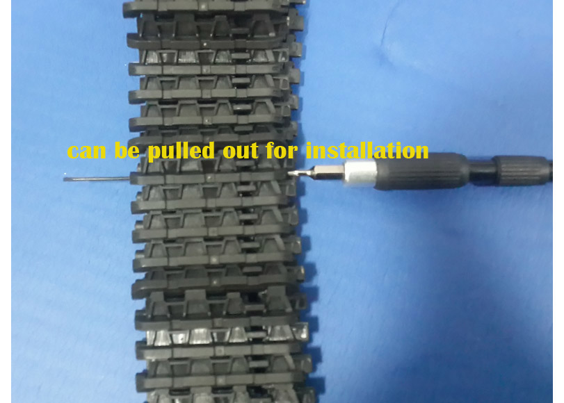
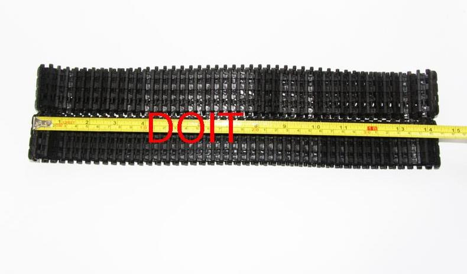

1. Accessories for Robot Tank Car Chassis¶
| Date: | 2018-01-30 |
|---|
In this part, we will provide some assembling document, examples video, source code, and user manual for DOIT robotics, such as, tank chassis, car chassis, wheels, robot arm, humanoid, and other robotic accessories.
1.1. Track/Caterpillar/Pedrail for Tank car chassis¶
About Stripping¶
This caterpillar is generally used for the assembling tank, which is connected one by one. So, we can change the length for the caterpillar for our requirment, as shown in the following picture. This stripping way is suitable for the other plastic track for our products.
Stripping the carterpillar
Also, we can watch the vido to know the stripping caterpillar: Stripping the caterpillar
In fact, we have the following two types of caterpillar: TC-09 and TC-03.
Caterpillar TC-09¶
The caterpillar TC-09 can be seen as following picturve.
Caterpillar TC-09
Now, we have the following two types of caterpillar: metal and plastic one. As for the assembling, they are no difference, just excluding the materials: one is plastic, and another is metal. But metal caterpillar looks very cool. If you want to order, please move to this links:
Caterpillar TC-03¶
The caterpillar TC-03 can be seen as following picture.
Caterpillar TC-03
If you like it, the order link: Plastic caterpillar TC-03
Note
- The standard length for the two types of caterpillar TC-09 AND TC-03, and their size are the same show as follows. 80cm*4.5cm (length*width);
- The stripping ways for the caterpillar are the same;
- The difference for TC-09 and TC-03 is for the middle. For TC-03 has two small holes, while TC-09 JUST has one small holes;
- The assembling is the same.
1.2. Wheels for Tank¶
The wheel for tank has driving wheel and bearing wheel. And each wheel can be metal and plastic. Especially, considering the caterpillar is different, so there are different wheels for caterpillar TC-09 and TC-03.
Driving wheels for the caterpillar TC-09¶
Metal Driving Wheel TW-09¶
The parameters can be seen as the follows, which is fitable for the caterpillar Caterpillar TC-09.
- Name: metal driving wheel
- Color: silver and golden yellow
- Material: aluminum alloy
- Color: silver/yellow
- Inner size for the coupling of the wheel: 4mm/5mm/6mm
- Type: driving
- Size: 31.85 (distance for coupling)*48.03 (diameter)*34.08 (for bearing connector) mm
Metal driving wheel suitable for TC-09
List for metal driving wheel
Align for metal driving wheel
Assembling metal driving wheel
To be fitable for the different size for the motor axis, we have the following three size coupling for this wheel: 4mm, 5mm, and 6mm.

Coupling for driving wheel
Plastic Driving Wheel for TC-09¶
The following plastic driving wheel can be used for the caterpillar TC-09.
Plastic driving wheel
But the related coupling for this plastic driving wheel is as follows. It has 4mm, 5mm, and 6mm from the size.
Coupling for plastic driving wheel
Note
- In the default case, the coupling must be bought;
- The assembling method is the same in the following driving wheel for TC-03;
Bearing Wheel TB-09¶
The bearing wheel can be seen as follows, which is assembled by two bearings. So the friction is very small, and can make the wheel move smoothly. The parameters is as follows.
- Name: metal bearing wheel
- Color: silver and golden yellow
- Material: aluminum alloy
- Type: bearing
- Size: 20.75 (distance for coupling)*47.50 (diameter)*38 (for bearing connector) mm
List of bearing wheel TB-09

Bearing wheel TB-09
Bearing wheel TB-09
Plastic Bearing Wheel¶
Similarly, there has the plastic bearing wheel to fit the caterpillar TC-09 with the following parameters:
- Color: black
- Material: plastic
- Size: 50*35 mm
- Hole Size: M4 (which can be connected by M4 screw.)
Plastic bearing wheel for TC-09
Metal Driving wheel TW-03 for TC-03¶
Metal driving wheel TW-03 for TC-03
The assembling way for TW-03 is the same as Metal Driving Wheel TW-09.
Metal Bearing Wheel TB-03¶
The wheel TB-03 is smaller than TB-09 with the following paramters:
Metal bearing wheel TB-03 for TC-03
The assembling method can be seen Bearing Wheel TB-09. Speically, If this wheel is used with the special bracket, then it can used for the shock absorption. See the following picture.
TB-03 with bracket for TC-03
TB-03 with bracket used for TS100
1.3. Metal Panel¶
There have two types of metal panel for robot tank car chassis, together with the following pictures. These two metal panel can be compatible with Arduino, and NodeMCU Motor kit.
Bend Metal Panel¶
Straight Metal Panel¶
Straight panel for robot car chassis
Note
- The difference for these two types panel is the straight and bend one.
- All the hole locations are the same, which can be perfectly fitable for the installation of our robot car chassis.
1.5. 9v with Hall sensor¶
The 9v motor has a Hall sensor, which can be used for the velocity measurement. But in our experiments, we don’t use the Hall sensor. The parameters can be seen at the following.
- Name: 25mm gear motor
- Output speed: 150±10%rpm
- No_load Current: 200mA (Max)
- Stall current: 4500mA(max)
- Stall torque: 9.5kgNaN
- Rated speed: 100±10%rpm
- Rated torque: 3000gNaN
- Rated Current: 1200mA (Max)
- Noise: 56dB
- Working voltage: 9V
- Outside Shaft Length: 14.5mm
- Shaft End Play: 0.05-0.50mm
- Screw Size: M3.0
- Dia. Of Shaft phi4mm, D3.5
- encoder: 2 pulses/circle
9v motor with Hall sensor
1.6. 12v phi=25mm motor¶
This motor has no encoder with the following parameters.
- Name: CGM-25GA-370 12V DC
- Voltage: 12V DC
- RPM: 320RPM
- Current: 0.55A
- Diameter: 25mm
- Height (excl. shaft): 68mm
- Shaft length: 9.5mm
- Shaft diameter: 4mm
- Weight: 180g
- Brand new and unused
- Torque: 13kg.cm
- max effective point: load 4.0kg.cm/235rpm/2.5W/0.58A
- Max power: load 7kg.cm/215rpm/3.1w/0.65A
- Stall current: 4.8A
12v motor no encoder
1.7. 12v phi=37mm motor¶
The axis for tis motor is 6mm, wit the following parameters.
12v 37 motor
1.8. Contact Us¶
- WhatsApp: +18676662425
- wechat: 18676662425
- Emails: yichone@doit.am; yichoneyi@163.com
- Skype: yichone
- Official site: www.doit.am
- official shop: www.vvdoit.com; www.smartarduino.com.
- AliExpress shop: szdoit.
- Aamzon Shop: